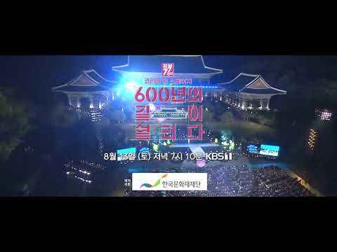
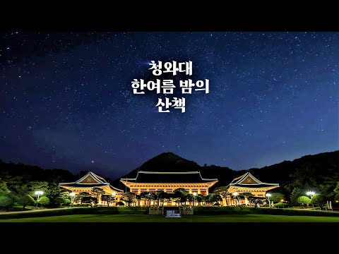

74년 만에 국민의 품으로 완전히 돌아오는 역사적인 순간을 축하하는 공연들을 청와대 본관 앞 대정원에 담아봅니다.

푸른 잔디가 펼쳐진 녹지원과 춘추관 앞에서 즐거운 문화예술로 푸른 희망을 나눕니다

국빈을 맞이하던 영빈관과 왕의 어머니들을 기리는 칠궁에서 다양한 역사공연이 그려집니다.

경복궁에서 청와대를 거쳐 북악산으로 이어지는 아름다운 길을 걸으며 문화유산을 만나고 자연도 품어봅니다.

청와대 곳곳에서 남녀노소 함께 즐기는 문화체험 축제의 장이 펼쳐집니다.

전국 청와대 유관장소(세종 대통령기록관, 청주 청남대, 합천 청와대세트장)에서도 청와대 개방을기념하는 특별한 행사를 누릴 수 있습니다.

클린스카이
2022.05.24
오래 살다 보니 청와대를 고궁처럼 구경 할 날도 오네요 갔던 날 날씨도 화장했고 공기도 좋아 청와대의 아름다움을 더 실감했습니다 조선시대 궁 보다 더 멋졌습니다 드 넓은 풀밭도 3개 정도 되는거 같은데 일단 2개만 그날 봤습니다

딩딩가족
2022.05.21
5월의 아침 코로나로 답답했던 국민에게 청와대 개방은 너무 소중한 힐링이었습니다. 이런 결정을 내린 새로운 정부 응원합니다. 너무 많은 인원입장이어서 걱정했는데 너무 넓고 광활하여 입장 후 여유롭게 가족들과 배포해준 안내도 맞춰 산책을 즐겼고 힐링하였습니다.

맥국
2022.05.21
산책코스가 좋아요 청와대 경복궁 남산이 한장의 사진. 아름다운 서울 .
이강훈
2022.05.16
54년만에 일반인 개방된 북악산 청와대 뒷길을 갔다왔다 잘 정돈된 탐방로에 아름드리 숲속을 걷고 우리 민족의 역사가 고스란히 담긴 길을 걸으며 옛 조상들의 발자취와 숨소리를 느낄수 있었고
청와대의 봄, 여름, 가을, 겨울

한국의 아름다운 자연유산 - 청와대 노거수 군

2022년 코리아 온 스테이지 예고 영상
청와대, 한여름 밤의 산책 랜선여행(내레이션) | Cheong Wa Dae, Midsummer Night Walk Online Travel(Narration Ver.)

청와대, 한여름 밤의 산책 랜선여행 | Cheong Wa Dae, Midsummer Night Walk Online Travel
청와대 본관 건축학적 의미


 관람시간 및 해설안내
관람시간 및 해설안내 공연 프로그램
공연 프로그램 함께 가 볼 만한 장소
함께 가 볼 만한 장소